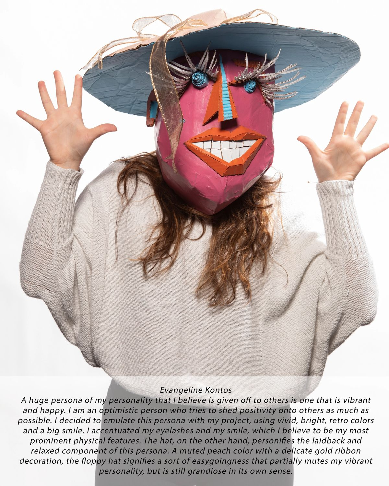

Mask Persona

Mask Persona, acrylic paint on cardboard
Link to @buartdesign Instagram FeatureFor this assignment in my Sculpture 1 course at Binghamton University, we were asked to create a wearable, three-dimensional mask that represented a persona of ours. The mask was to be created fully out of cardboard and painted with colors that were mindfully selected. I first created a cardboard head base, which I duct taped together and smoothed out with papier-mache. I then added several abstract facial features created with varying techniques. I topped the mask with a cardboard floppy hat, which I decorated with a gold ribbon. The mask was finished with acrylic paint.
A huge persona of my personality that I believe is given off to others is one that is vibrant and happy. I am an optimistic person who tries to shed positivity onto others as much as possible. I decided to emulate this persona with my project, using vivid, bright, retro colors and a big smile. I accentuated my eyelashes and my smile, which I believe to be my most prominent physical features. The hat, on the other hand, personifies the laid-back and relaxed component of this persona. A muted peach color with a delicate gold ribbon decoration, the floppy hat signifies a sort of easygoingness that partially mutes my vibrant personality, but is still grandiose in its own sense.